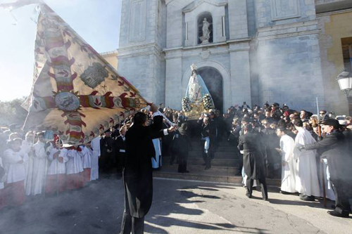

SEMANA SANTA
Diecinueve Cofradías y Hermandades, nueve bandas de cornetas y tambores y agrupaciones musicales, más de tres mil cofrades, procesionan por las calles de la ciudad, acompañando cuarenta y dos pasos procesionales en las once procesiones que se celebran.
La Semana Santa de Yecla cuenta con un gran patrimonio artístico en bordados, orfebrería y talla en madera destacando las más 80 imágenes que participan en las 11 Procesiones que se celebran en Yecla. La imagen más antigua de nuestra Semana Santa es la Virgen de las Angustias (Salzillo 1763) declarada Bien de Interés Cultural. Gran parte de este patrimonio puede ser contemplado durante el año en el Museo de Semana Santa ubicado en la Iglesia Vieja.
El arraigo tradicional de estos desfiles, el esfuerzo del Cabildo y las Cofradías, y el pueblo Yeclano volcado hacia estas manifestaciones, ha merecido que nuestra Semana Santa, fuese en su día Declaradas de Interés Turístico.
SAN ISIDRO
A mediados del mes de mayo, Yecla recupera su tradición agrícola, con la celebración de las Fiestas San Isidro. Estos festejos tienen un importante arraigo en una ciudad que hasta mediados del s. XX, estaba dedicada a la recolección y elaboración de excelentes caldos y apreciados aceites.
Esta Gran Cabalgata se gesta gracias al intenso trabajo para elaborar las Carrozas de las Peñas, ya que tras tener el diseño y las estructuras metálicas o de madera, que se montan sobre remolques de tractores, tienen que decorarlas mediante diminutos trozos de papel de seda o manila de unos siete centímetros, que se arruga y comprime para cubrir las estructuras, algunas de ellas con unas dimensiones de cinco metros y medio de altura, y una anchura de entre tres metros y seis metros de longitud.
Las carrozas desfilan en dos categorías: adultas e infantiles. Las carrozas adultas se inspiran en motivos relacionados con el campo y sus actividades, o con lugares históricos o emblemáticos de la ciudad. Las carrozas infantiles se inspiran en motivos relacionados con la fantasía, personajes infantiles, etc. Unas y otras ofrecen un espectacular desfile de imagenes artesanales y con mensajes repletos de humor.
FIESTAS DE LA VIRGEN
Las Fiestas Patronales, comienzan el 5 de diciembre con el llamado acto del Beneplácito, en el que el Presidente de la Asociación de Mayordomos pide permiso a la primera autoridad municipal para que den comienzo las Fiestas. Por la tarde, alabarderos y tamborileros invitan al vecindario a sumarse a la fiesta. El día 6 por la mañana, se celebra una Misa de Pajes, y por la tarde el Beso de la Bandera de toda la soldadesca.
El Día de la Bajada, se inicia con la Alborada, en el atrio de la Basílica de la Purísima para a continuación encaminarse, disparándose siempre los arcabuces, hasta el Santuario del Castillo, desde el que proceden al traslado de la Patrona de Yecla hasta su Basílica. En el recorrido, el Mayordomo juega la Bandera ante la Virgen, a la salida del Santuario, en el llamado Paso de la Bandera y a la entrada a la Basílica, mientras que los arcabuces, sin interrupción, intensifican sus disparos.
Ese mismo día, por la tarde, las diferentes escuadras proceden al acto de la Ofrenda de Flores, tras un recorrido por las calles céntricas de la ciudad.
